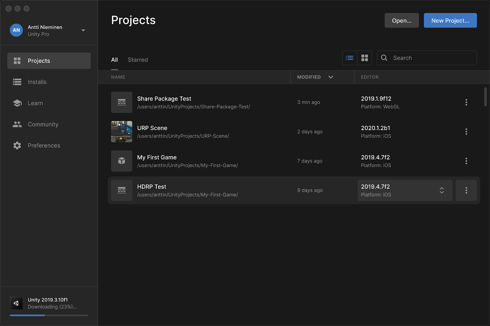
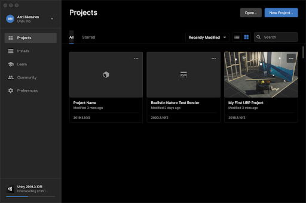
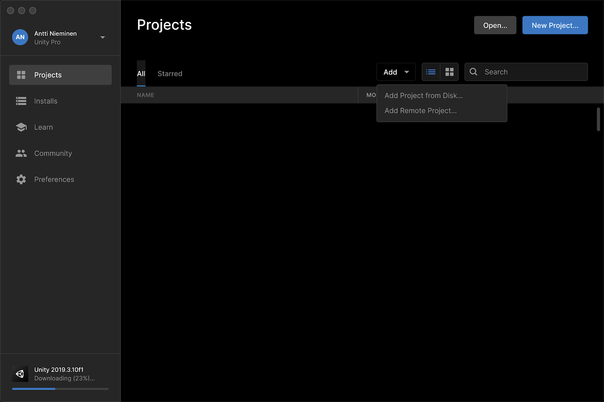
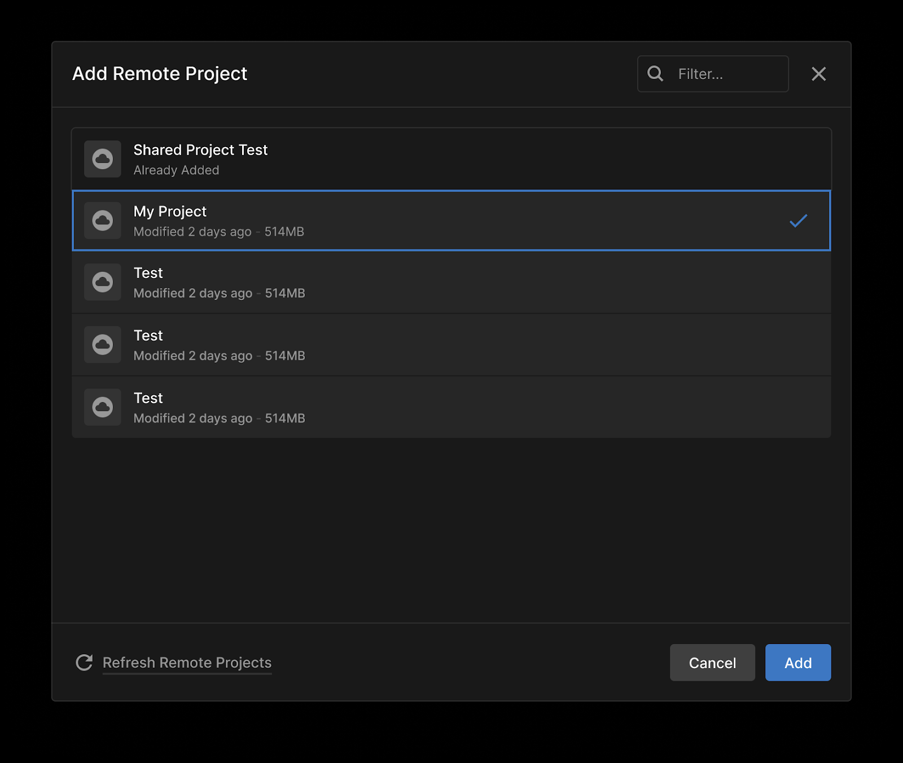
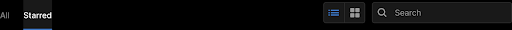
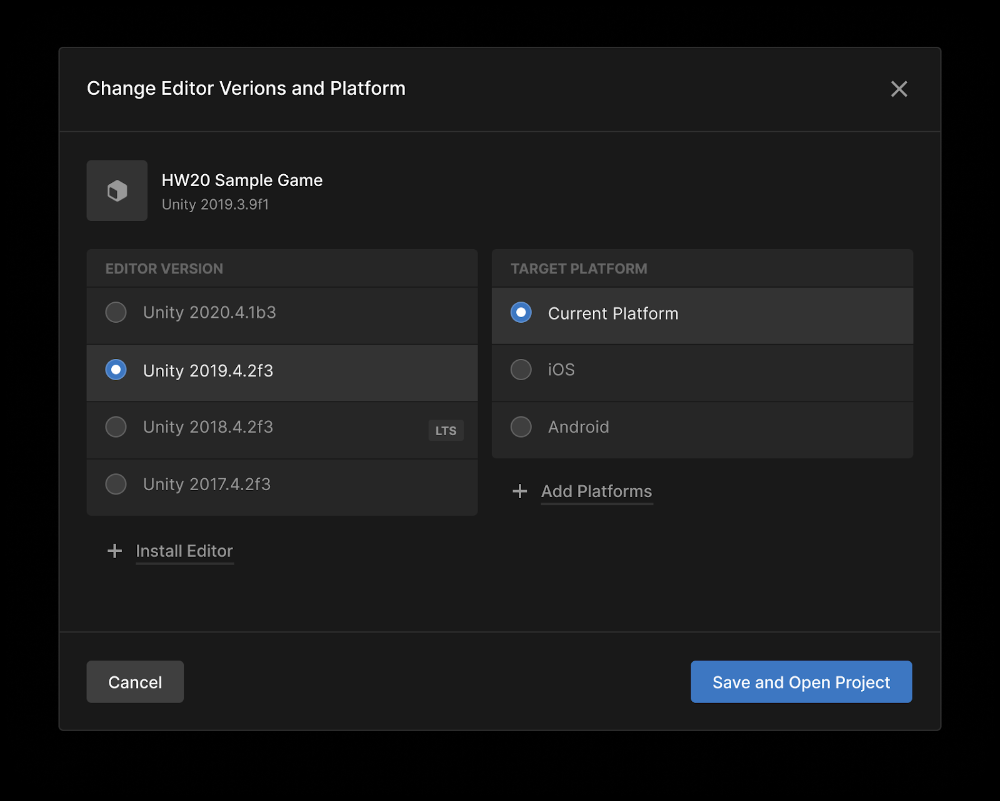
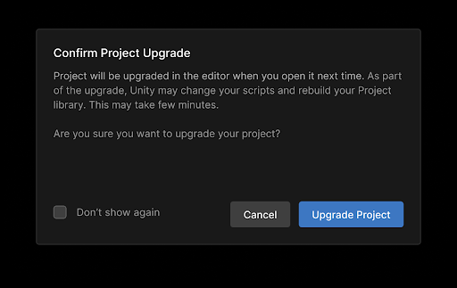
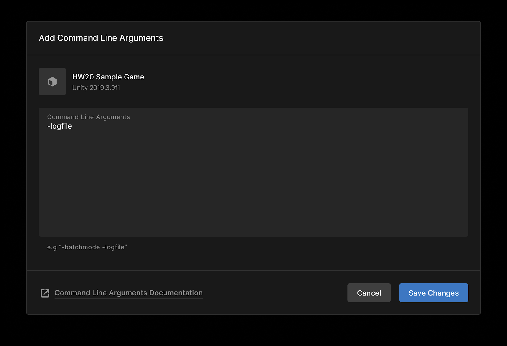
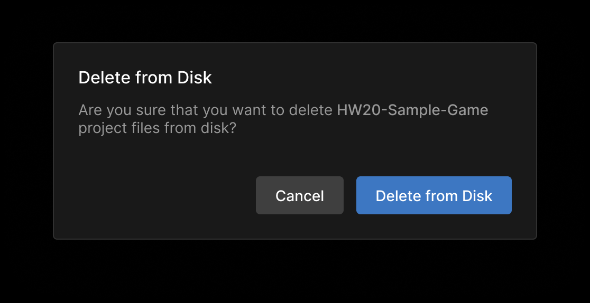

Projects
Overview
The Projects screen displays your Unity Projects. From this screen you can create a new Project, manage your existing Projects, or open a Project in the Unity Editor.

Switching between list and grid view
By default, the your Projects are displayed in a list. You can also display your Projects in a grid view. Either view allows you to sort, search, and manage your Projects.
To switch to grid view, click [grid icon].

To switch back to list view, click [list icon].
Managing your Projects
To view your Unity Projects in the Hub, click the Projects tab.
Adding an existing Project
If you have an existing Project that isn’t displayed on the Projects screen, click Add.

To add a local Project, click Add Project from Disk and browse to the Project folder. You can also drag and drop the folder from your filesystem directly into the Projects screen.
To add a project from the cloud, including collab projects, click Add Remote Project.

Locate the remote project and click Add.
To remove or delete a project, see Removing or deleting a project.
Configuring a Project
From the Projects screen, click  next to the Project name. This opens a drop-down menu with additional options.
next to the Project name. This opens a drop-down menu with additional options.
> **Note:** In grid view, open this menu by clicking **...** inside a project tile.
Starring a Project
To star a Project for quick access, click Add to Starred from the drop-down menu.
To see all your starred Projects on the Projects screen, click Starred.

Changing Editor version or target platform
To change the Editor version or target platform associated with a Project, click the Editor version and select from the available options, then click Save and Open Project.

Click Upgrade Project to confirm that you want to upgrade or downgrade your project.

Locating Project files on your hard drive
From the drop-down menu, click Reveal in Finder from the drop-down menu.
Adding command line arguments
If you want to launch your Project with command line arguments, click **Add Command Line Arguments… **to open a text box.

Enter your arguments and click Save Changes.
For more information about the available arguments, see link.
Removing or deleting a Project
To remove a Project from the Hub without deleting local files, click **Remove from List. **You can add the Project folder again at any time by Adding an existing Project to the Hub.
To delete local Project files, click **Delete from Disk… **in the drop-down menu. When prompted, click Delete from Disk to confirm your selection.

This removes all Project files from your hard drive.